ATG — FULL ASSET GALLERY (auto-generated)
576 assets ×3 files (base + bump + light). Swap any stub at the same path;
regenerate this page with generate_stubs.py. Preview capped at 256px — files are native size.
buildings (243)
building_telescope_l1.gif building_telescope_l1.ov.hot.gif building_telescope_l1.ov.cold.gif building_telescope_l2.gif building_telescope_l2.ov.hot.gif building_telescope_l2.ov.cold.gif building_telescope_l3.gif building_telescope_l3.ov.hot.gif building_telescope_l3.ov.cold.gif building_probe_pad_l1.gif building_probe_pad_l1.ov.hot.gif building_probe_pad_l1.ov.cold.gif building_probe_pad_l2.gif building_probe_pad_l2.ov.hot.gif building_probe_pad_l2.ov.cold.gif building_probe_pad_l3.gif building_probe_pad_l3.ov.hot.gif building_probe_pad_l3.ov.cold.gif 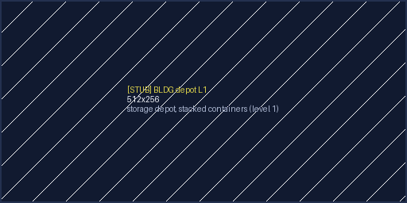
building_depot_l1.gif 
building_depot_l1.ov.hot.gif 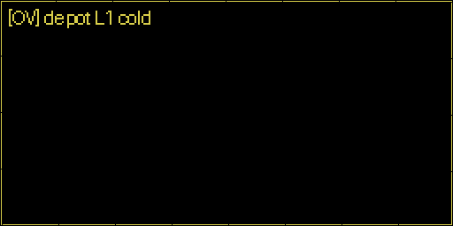
building_depot_l1.ov.cold.gif building_depot_l2.gif building_depot_l2.ov.hot.gif building_depot_l2.ov.cold.gif building_depot_l3.gif 
building_depot_l3.ov.hot.gif building_depot_l3.ov.cold.gif building_mine_l1.gif building_mine_l1.ov.hot.gif 
building_mine_l1.ov.cold.gif building_mine_l2.gif building_mine_l2.ov.hot.gif building_mine_l2.ov.cold.gif building_mine_l3.gif building_mine_l3.ov.hot.gif building_mine_l3.ov.cold.gif 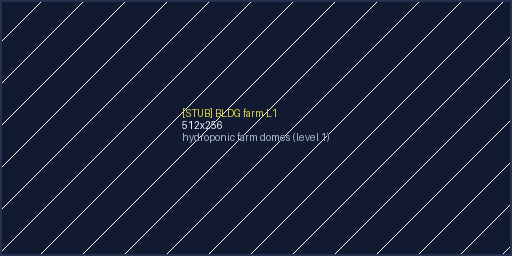
building_farm_l1.gif 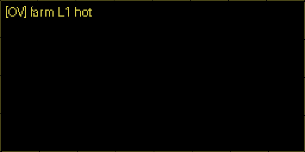
building_farm_l1.ov.hot.gif building_farm_l1.ov.cold.gif building_farm_l2.gif building_farm_l2.ov.hot.gif building_farm_l2.ov.cold.gif building_farm_l3.gif building_farm_l3.ov.hot.gif 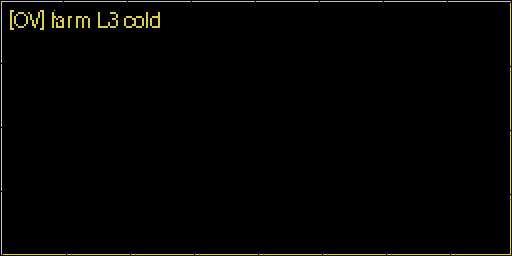
building_farm_l3.ov.cold.gif building_waterworks_l1.gif 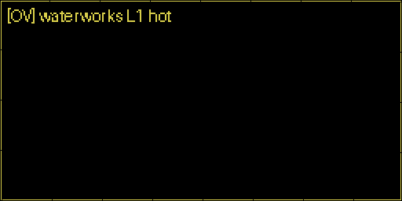
building_waterworks_l1.ov.hot.gif building_waterworks_l1.ov.cold.gif building_waterworks_l2.gif 
building_waterworks_l2.ov.hot.gif building_waterworks_l2.ov.cold.gif building_waterworks_l3.gif 
building_waterworks_l3.ov.hot.gif building_waterworks_l3.ov.cold.gif building_smelter_l1.gif 
building_smelter_l1.ov.hot.gif 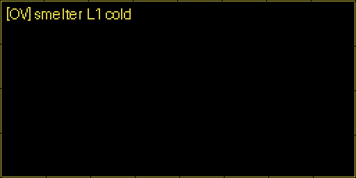
building_smelter_l1.ov.cold.gif 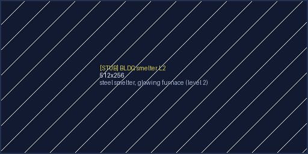
building_smelter_l2.gif 
building_smelter_l2.ov.hot.gif 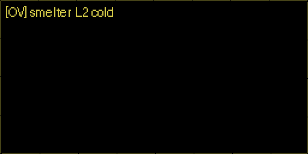
building_smelter_l2.ov.cold.gif 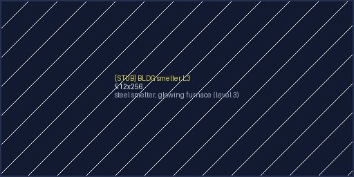
building_smelter_l3.gif 
building_smelter_l3.ov.hot.gif building_smelter_l3.ov.cold.gif building_crystal_extractor_l1.gif building_crystal_extractor_l1.ov.hot.gif building_crystal_extractor_l1.ov.cold.gif building_crystal_extractor_l2.gif building_crystal_extractor_l2.ov.hot.gif building_crystal_extractor_l2.ov.cold.gif 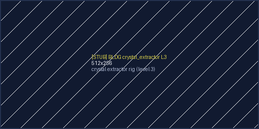
building_crystal_extractor_l3.gif 
building_crystal_extractor_l3.ov.hot.gif building_crystal_extractor_l3.ov.cold.gif building_refinery_l1.gif 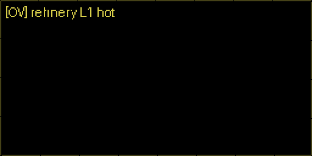
building_refinery_l1.ov.hot.gif 
building_refinery_l1.ov.cold.gif 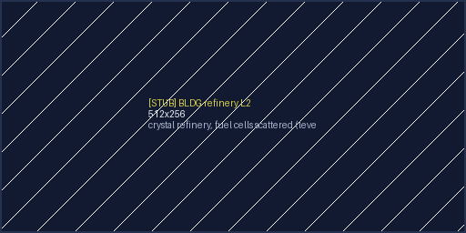
building_refinery_l2.gif building_refinery_l2.ov.hot.gif 
building_refinery_l2.ov.cold.gif building_refinery_l3.gif building_refinery_l3.ov.hot.gif building_refinery_l3.ov.cold.gif building_fuelcell_plant_l1.gif building_fuelcell_plant_l1.ov.hot.gif 
building_fuelcell_plant_l1.ov.cold.gif building_fuelcell_plant_l2.gif 
building_fuelcell_plant_l2.ov.hot.gif building_fuelcell_plant_l2.ov.cold.gif building_fuelcell_plant_l3.gif building_fuelcell_plant_l3.ov.hot.gif 
building_fuelcell_plant_l3.ov.cold.gif building_spaceport_l1.gif 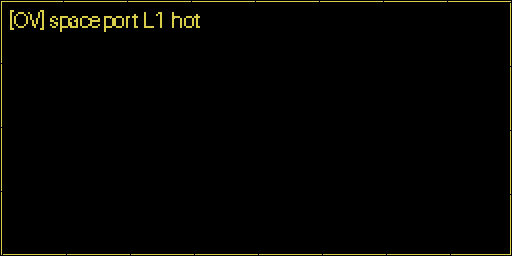
building_spaceport_l1.ov.hot.gif building_spaceport_l1.ov.cold.gif 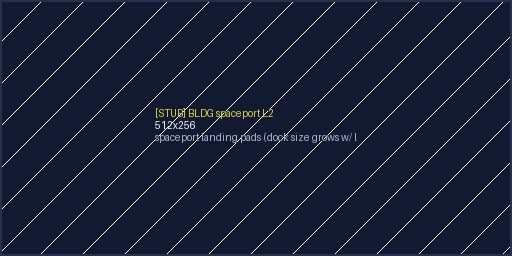
building_spaceport_l2.gif 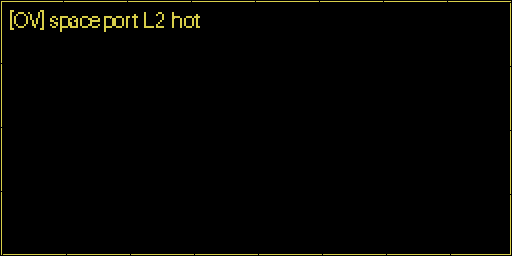
building_spaceport_l2.ov.hot.gif building_spaceport_l2.ov.cold.gif 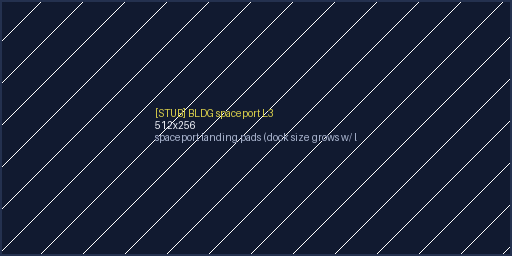
building_spaceport_l3.gif building_spaceport_l3.ov.hot.gif 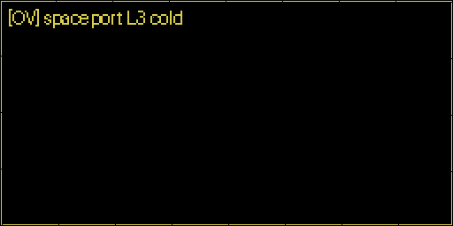
building_spaceport_l3.ov.cold.gif building_workshop_l1.gif building_workshop_l1.ov.hot.gif building_workshop_l1.ov.cold.gif building_workshop_l2.gif building_workshop_l2.ov.hot.gif building_workshop_l2.ov.cold.gif 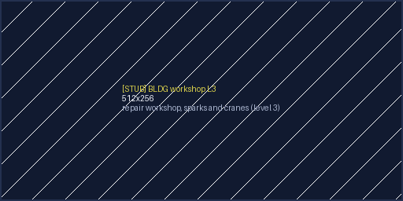
building_workshop_l3.gif building_workshop_l3.ov.hot.gif 
building_workshop_l3.ov.cold.gif building_market_l1.gif building_market_l1.ov.hot.gif building_market_l1.ov.cold.gif building_market_l2.gif building_market_l2.ov.hot.gif 
building_market_l2.ov.cold.gif building_market_l3.gif building_market_l3.ov.hot.gif building_market_l3.ov.cold.gif building_residential_l1.gif 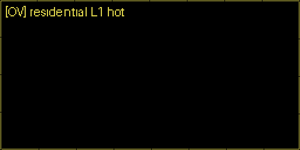
building_residential_l1.ov.hot.gif building_residential_l1.ov.cold.gif 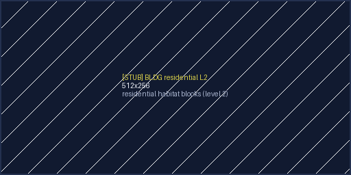
building_residential_l2.gif building_residential_l2.ov.hot.gif building_residential_l2.ov.cold.gif building_residential_l3.gif building_residential_l3.ov.hot.gif building_residential_l3.ov.cold.gif building_lab_l1.gif building_lab_l1.ov.hot.gif 
building_lab_l1.ov.cold.gif building_lab_l2.gif building_lab_l2.ov.hot.gif building_lab_l2.ov.cold.gif building_lab_l3.gif building_lab_l3.ov.hot.gif building_lab_l3.ov.cold.gif building_obs_station_l1.gif building_obs_station_l1.ov.hot.gif building_obs_station_l1.ov.cold.gif building_obs_station_l2.gif building_obs_station_l2.ov.hot.gif building_obs_station_l2.ov.cold.gif building_obs_station_l3.gif building_obs_station_l3.ov.hot.gif building_obs_station_l3.ov.cold.gif building_shipyard_l1.gif 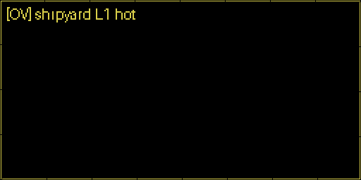
building_shipyard_l1.ov.hot.gif building_shipyard_l1.ov.cold.gif building_shipyard_l2.gif building_shipyard_l2.ov.hot.gif building_shipyard_l2.ov.cold.gif 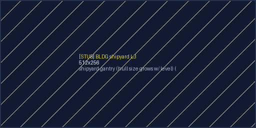
building_shipyard_l3.gif 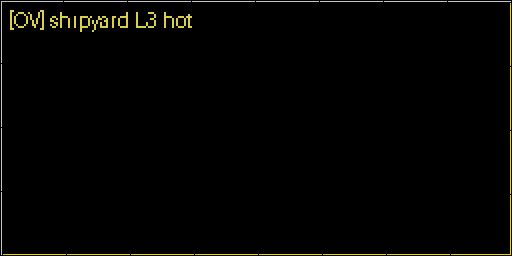
building_shipyard_l3.ov.hot.gif 
building_shipyard_l3.ov.cold.gif 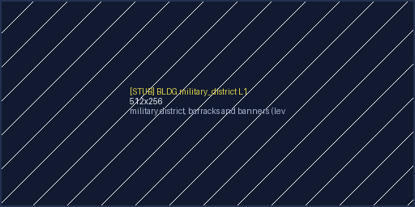
building_military_district_l1.gif 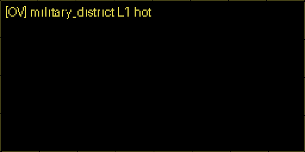
building_military_district_l1.ov.hot.gif 
building_military_district_l1.ov.cold.gif building_military_district_l2.gif building_military_district_l2.ov.hot.gif building_military_district_l2.ov.cold.gif 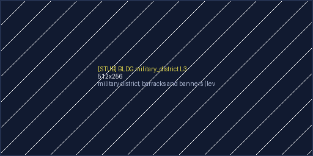
building_military_district_l3.gif 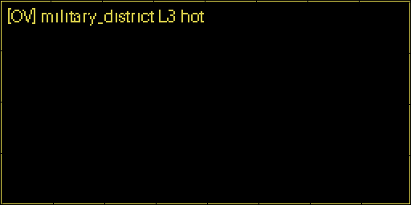
building_military_district_l3.ov.hot.gif building_military_district_l3.ov.cold.gif 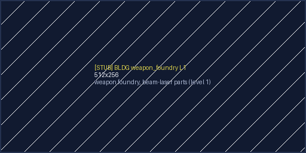
building_weapon_foundry_l1.gif 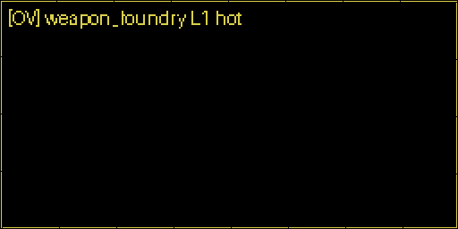
building_weapon_foundry_l1.ov.hot.gif building_weapon_foundry_l1.ov.cold.gif building_weapon_foundry_l2.gif 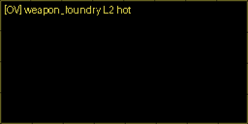
building_weapon_foundry_l2.ov.hot.gif building_weapon_foundry_l2.ov.cold.gif building_weapon_foundry_l3.gif building_weapon_foundry_l3.ov.hot.gif building_weapon_foundry_l3.ov.cold.gif building_research_center_l1.gif building_research_center_l1.ov.hot.gif building_research_center_l1.ov.cold.gif building_research_center_l2.gif building_research_center_l2.ov.hot.gif building_research_center_l2.ov.cold.gif building_research_center_l3.gif building_research_center_l3.ov.hot.gif building_research_center_l3.ov.cold.gif building_diplomatic_district_l1.gif building_diplomatic_district_l1.ov.hot.gif building_diplomatic_district_l1.ov.cold.gif building_diplomatic_district_l2.gif building_diplomatic_district_l2.ov.hot.gif building_diplomatic_district_l2.ov.cold.gif building_diplomatic_district_l3.gif building_diplomatic_district_l3.ov.hot.gif building_diplomatic_district_l3.ov.cold.gif building_casino_l1.gif building_casino_l1.ov.hot.gif building_casino_l1.ov.cold.gif building_casino_l2.gif building_casino_l2.ov.hot.gif building_casino_l2.ov.cold.gif building_casino_l3.gif building_casino_l3.ov.hot.gif building_casino_l3.ov.cold.gif building_commerce_district_l1.gif building_commerce_district_l1.ov.hot.gif building_commerce_district_l1.ov.cold.gif building_commerce_district_l2.gif building_commerce_district_l2.ov.hot.gif building_commerce_district_l2.ov.cold.gif building_commerce_district_l3.gif building_commerce_district_l3.ov.hot.gif building_commerce_district_l3.ov.cold.gif building_faction_hq_l1.gif building_faction_hq_l1.ov.hot.gif building_faction_hq_l1.ov.cold.gif building_faction_hq_l2.gif building_faction_hq_l2.ov.hot.gif building_faction_hq_l2.ov.cold.gif building_faction_hq_l3.gif building_faction_hq_l3.ov.hot.gif building_faction_hq_l3.ov.cold.gif building_stargate_yard_l1.gif building_stargate_yard_l1.ov.hot.gif building_stargate_yard_l1.ov.cold.gif building_stargate_yard_l2.gif building_stargate_yard_l2.ov.hot.gif building_stargate_yard_l2.ov.cold.gif building_stargate_yard_l3.gif building_stargate_yard_l3.ov.hot.gif building_stargate_yard_l3.ov.cold.gif building_terraformer_l1.gif building_terraformer_l1.ov.hot.gif building_terraformer_l1.ov.cold.gif building_terraformer_l2.gif building_terraformer_l2.ov.hot.gif building_terraformer_l2.ov.cold.gif building_terraformer_l3.gif building_terraformer_l3.ov.hot.gif building_terraformer_l3.ov.cold.gif building_artificial_planet_yard_l1.gif building_artificial_planet_yard_l1.ov.hot.gif building_artificial_planet_yard_l1.ov.cold.gif building_artificial_planet_yard_l2.gif building_artificial_planet_yard_l2.ov.hot.gif building_artificial_planet_yard_l2.ov.cold.gif building_artificial_planet_yard_l3.gif building_artificial_planet_yard_l3.ov.hot.gif building_artificial_planet_yard_l3.ov.cold.gif
cards (42)
card_building_telescope.png card_building_probe_pad.png card_building_depot.png card_building_mine.png card_building_farm.png card_building_waterworks.png card_building_smelter.png card_building_crystal_extractor.png card_building_refinery.png card_building_fuelcell_plant.png card_building_spaceport.png card_building_workshop.png card_building_market.png card_building_residential.png card_building_lab.png card_building_obs_station.png card_building_shipyard.png card_building_military_district.png card_building_weapon_foundry.png card_building_research_center.png card_building_diplomatic_district.png card_building_casino.png card_building_commerce_district.png card_building_faction_hq.png card_building_stargate_yard.png card_building_terraformer.png card_building_artificial_planet_yard.png card_npc_pilot.png card_npc_engineer.png card_npc_merchant.png card_npc_diplomat.png card_npc_soldier.png card_npc_scientist.png card_item_beamlaser.png card_item_harvest_rig.png card_item_junk_collector.png card_item_claim_rig.png card_item_scanner.png card_item_terraform_core.png card_item_shield_hot.png card_item_shield_cold.png card_item_shield_radio.png
planets (72)
planet_hot_s.gif planet_hot_s.ov.smog.gif planet_hot_s.ov.ice.gif planet_hot_s.ov.burn.gif planet_hot_s.ov.poison.gif planet_hot_s.ov.radio.gif planet_hot_m.gif planet_hot_m.ov.smog.gif planet_hot_m.ov.ice.gif planet_hot_m.ov.burn.gif planet_hot_m.ov.poison.gif planet_hot_m.ov.radio.gif planet_hot_l.gif planet_hot_l.ov.smog.gif planet_hot_l.ov.ice.gif planet_hot_l.ov.burn.gif planet_hot_l.ov.poison.gif planet_hot_l.ov.radio.gif planet_cold_s.gif planet_cold_s.ov.smog.gif planet_cold_s.ov.ice.gif planet_cold_s.ov.burn.gif planet_cold_s.ov.poison.gif planet_cold_s.ov.radio.gif planet_cold_m.gif planet_cold_m.ov.smog.gif planet_cold_m.ov.ice.gif planet_cold_m.ov.burn.gif planet_cold_m.ov.poison.gif planet_cold_m.ov.radio.gif planet_cold_l.gif planet_cold_l.ov.smog.gif planet_cold_l.ov.ice.gif planet_cold_l.ov.burn.gif planet_cold_l.ov.poison.gif planet_cold_l.ov.radio.gif planet_temperate_s.gif planet_temperate_s.ov.smog.gif planet_temperate_s.ov.ice.gif planet_temperate_s.ov.burn.gif planet_temperate_s.ov.poison.gif planet_temperate_s.ov.radio.gif planet_temperate_m.gif planet_temperate_m.ov.smog.gif planet_temperate_m.ov.ice.gif planet_temperate_m.ov.burn.gif planet_temperate_m.ov.poison.gif planet_temperate_m.ov.radio.gif planet_temperate_l.gif planet_temperate_l.ov.smog.gif planet_temperate_l.ov.ice.gif planet_temperate_l.ov.burn.gif planet_temperate_l.ov.poison.gif planet_temperate_l.ov.radio.gif planet_poison_s.gif planet_poison_s.ov.smog.gif planet_poison_s.ov.ice.gif planet_poison_s.ov.burn.gif planet_poison_s.ov.poison.gif planet_poison_s.ov.radio.gif planet_poison_m.gif planet_poison_m.ov.smog.gif planet_poison_m.ov.ice.gif planet_poison_m.ov.burn.gif planet_poison_m.ov.poison.gif planet_poison_m.ov.radio.gif planet_poison_l.gif planet_poison_l.ov.smog.gif planet_poison_l.ov.ice.gif planet_poison_l.ov.burn.gif planet_poison_l.ov.poison.gif planet_poison_l.ov.radio.gif
portraits (18)
portrait_human_pilot_01.gif portrait_human_engineer_01.gif portrait_human_merchant_01.gif portrait_human_diplomat_01.gif portrait_human_soldier_01.gif portrait_human_scientist_01.gif portrait_forged_pilot_01.gif portrait_forged_engineer_01.gif portrait_forged_merchant_01.gif portrait_forged_diplomat_01.gif portrait_forged_soldier_01.gif portrait_forged_scientist_01.gif portrait_vess_pilot_01.gif portrait_vess_engineer_01.gif portrait_vess_merchant_01.gif portrait_vess_diplomat_01.gif portrait_vess_soldier_01.gif portrait_vess_scientist_01.gif
resources (30)
res_ore.gif res_carbon.gif res_hydrogen.gif res_oxygen.gif res_lithium.gif res_sulfur.gif res_gold.gif res_uranium.gif res_deuterium.gif res_aluminium.gif res_phosphor.gif res_silicon.gif res_crystal_hot.gif res_crystal_cold.gif res_crystal_temperate.gif res_crystal_nox.gif res_steel_l.gif res_steel_h.gif res_water.gif res_heavy_water.gif res_food_1.gif res_food_2.gif res_food_3.gif res_med_1.gif res_med_2.gif res_med_3.gif res_fuel_cells.gif res_fuel_cold.gif res_fuel_hot.gif res_fuel_gas.gif
ships (152)
ship_combat_s.gif ship_combat_s.ov.engine_1.gif ship_combat_s.ov.engine_2.gif ship_combat_s.ov.armor_1.gif ship_combat_s.ov.armor_2.gif ship_combat_s.ov.fuel_1.gif ship_combat_s.ov.fuel_2.gif ship_combat_s.ov.weapon_a2a_1.gif ship_combat_s.ov.weapon_a2a_2.gif ship_combat_s.ov.weapon_a2g_1.gif ship_combat_s.ov.weapon_a2g_2.gif ship_combat_s.ov.harvest.gif ship_combat_s.ov.junk_collector.gif ship_combat_s.ov.claim_rig.gif ship_combat_s.ov.scanner.gif ship_combat_s.ov.shield_hot.gif ship_combat_s.ov.shield_cold.gif ship_combat_s.ov.shield_radio.gif ship_combat_m.gif ship_combat_m.ov.engine_1.gif ship_combat_m.ov.engine_2.gif ship_combat_m.ov.armor_1.gif ship_combat_m.ov.armor_2.gif ship_combat_m.ov.fuel_1.gif ship_combat_m.ov.fuel_2.gif ship_combat_m.ov.obs_1.gif ship_combat_m.ov.obs_2.gif ship_combat_m.ov.weapon_a2a_1.gif ship_combat_m.ov.weapon_a2a_2.gif ship_combat_m.ov.weapon_a2g_1.gif ship_combat_m.ov.weapon_a2g_2.gif ship_combat_m.ov.harvest.gif ship_combat_m.ov.junk_collector.gif ship_combat_m.ov.claim_rig.gif ship_combat_m.ov.scanner.gif ship_combat_m.ov.shield_hot.gif ship_combat_m.ov.shield_cold.gif ship_combat_m.ov.shield_radio.gif ship_combat_l.gif ship_combat_l.ov.engine_1.gif ship_combat_l.ov.engine_2.gif ship_combat_l.ov.armor_1.gif ship_combat_l.ov.armor_2.gif ship_combat_l.ov.fuel_1.gif ship_combat_l.ov.fuel_2.gif ship_combat_l.ov.obs_1.gif ship_combat_l.ov.obs_2.gif ship_combat_l.ov.weapon_a2a_1.gif ship_combat_l.ov.weapon_a2a_2.gif ship_combat_l.ov.weapon_a2g_1.gif ship_combat_l.ov.weapon_a2g_2.gif ship_combat_l.ov.harvest.gif ship_combat_l.ov.junk_collector.gif ship_combat_l.ov.claim_rig.gif ship_combat_l.ov.scanner.gif ship_combat_l.ov.shield_hot.gif ship_combat_l.ov.shield_cold.gif ship_combat_l.ov.shield_radio.gif ship_cargo_s.gif ship_cargo_s.ov.engine_1.gif ship_cargo_s.ov.engine_2.gif ship_cargo_s.ov.armor_1.gif ship_cargo_s.ov.armor_2.gif ship_cargo_s.ov.fuel_1.gif ship_cargo_s.ov.fuel_2.gif ship_cargo_s.ov.cargo_1.gif ship_cargo_s.ov.cargo_2.gif ship_cargo_s.ov.harvest.gif ship_cargo_s.ov.junk_collector.gif ship_cargo_s.ov.claim_rig.gif ship_cargo_s.ov.scanner.gif ship_cargo_s.ov.shield_hot.gif ship_cargo_s.ov.shield_cold.gif ship_cargo_s.ov.shield_radio.gif ship_cargo_m.gif ship_cargo_m.ov.engine_1.gif ship_cargo_m.ov.engine_2.gif ship_cargo_m.ov.armor_1.gif ship_cargo_m.ov.armor_2.gif ship_cargo_m.ov.fuel_1.gif ship_cargo_m.ov.fuel_2.gif ship_cargo_m.ov.cargo_1.gif ship_cargo_m.ov.cargo_2.gif ship_cargo_m.ov.harvest.gif ship_cargo_m.ov.junk_collector.gif ship_cargo_m.ov.claim_rig.gif ship_cargo_m.ov.scanner.gif ship_cargo_m.ov.shield_hot.gif ship_cargo_m.ov.shield_cold.gif ship_cargo_m.ov.shield_radio.gif ship_cargo_l.gif ship_cargo_l.ov.engine_1.gif ship_cargo_l.ov.engine_2.gif ship_cargo_l.ov.armor_1.gif ship_cargo_l.ov.armor_2.gif ship_cargo_l.ov.fuel_1.gif ship_cargo_l.ov.fuel_2.gif ship_cargo_l.ov.cargo_1.gif ship_cargo_l.ov.cargo_2.gif ship_cargo_l.ov.harvest.gif ship_cargo_l.ov.junk_collector.gif ship_cargo_l.ov.claim_rig.gif ship_cargo_l.ov.scanner.gif ship_cargo_l.ov.shield_hot.gif ship_cargo_l.ov.shield_cold.gif ship_cargo_l.ov.shield_radio.gif ship_civil_s.gif ship_civil_s.ov.engine_1.gif ship_civil_s.ov.engine_2.gif ship_civil_s.ov.armor_1.gif ship_civil_s.ov.armor_2.gif ship_civil_s.ov.fuel_1.gif ship_civil_s.ov.fuel_2.gif ship_civil_s.ov.harvest.gif ship_civil_s.ov.junk_collector.gif ship_civil_s.ov.claim_rig.gif ship_civil_s.ov.scanner.gif ship_civil_s.ov.shield_hot.gif ship_civil_s.ov.shield_cold.gif ship_civil_s.ov.shield_radio.gif ship_civil_m.gif ship_civil_m.ov.engine_1.gif ship_civil_m.ov.engine_2.gif ship_civil_m.ov.armor_1.gif ship_civil_m.ov.armor_2.gif ship_civil_m.ov.fuel_1.gif ship_civil_m.ov.fuel_2.gif ship_civil_m.ov.harvest.gif ship_civil_m.ov.junk_collector.gif ship_civil_m.ov.claim_rig.gif ship_civil_m.ov.scanner.gif ship_civil_m.ov.shield_hot.gif ship_civil_m.ov.shield_cold.gif ship_civil_m.ov.shield_radio.gif ship_civil_m.ov.colony_fitting.gif ship_civil_l.gif ship_civil_l.ov.engine_1.gif ship_civil_l.ov.engine_2.gif ship_civil_l.ov.armor_1.gif ship_civil_l.ov.armor_2.gif ship_civil_l.ov.fuel_1.gif ship_civil_l.ov.fuel_2.gif ship_civil_l.ov.harvest.gif ship_civil_l.ov.junk_collector.gif ship_civil_l.ov.claim_rig.gif ship_civil_l.ov.scanner.gif ship_civil_l.ov.shield_hot.gif ship_civil_l.ov.shield_cold.gif ship_civil_l.ov.shield_radio.gif ship_civil_l.ov.colony_fitting.gif ship_personal.gif ship_probe.gif
stars (4)
star_cold.gif star_hot.gif star_gas.gif blackhole.gif
units (15)
unit_turret_light_l1.gif unit_turret_light_l2.gif unit_turret_heavy_l1.gif unit_turret_heavy_l2.gif unit_cannon_l1.gif unit_cannon_l2.gif unit_tank_ground_l1.gif unit_tank_ground_l2.gif unit_tank_ground_l3.gif unit_tank_antiair_l1.gif unit_tank_antiair_l2.gif unit_tank_antiair_l3.gif unit_tank_combined_l1.gif unit_tank_combined_l2.gif unit_tank_combined_l3.gif